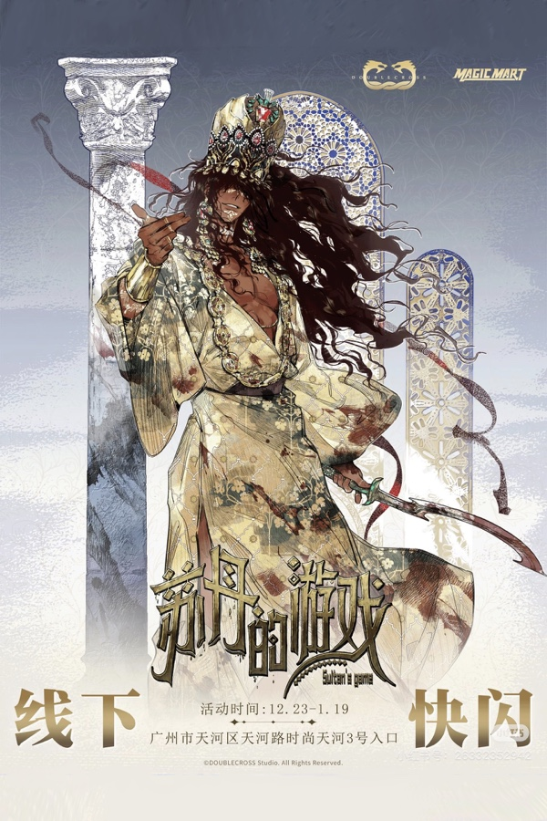

Sultan's Game
Every archived year-end list appearance, including placement and points earned.
About the Game
Sultan's Game is a card-based simulation and narrative game, inspired by The One Thousand and One Nights. You are one of the ministers of the mighty Sultan, a fickle, cruel king who treats his subjects like pawns in a deadly game for his own pleasure. Forced to make dreadful choices to save your own life, you will have to find a way to survive not just the Sultan’s Game, but its consequences too.The Sultan forces you, his minister, to participate in a cruel game: draw one of four cards, and complete its challenge within seven days – or you will be executed. The Carnality Card pushes you into the pursuit of carnal pleasures. The Extravagance Card requires lavish spending to be fulfilled. The Conquer Card forces you into perilous adventures. Finally, the Bloodshed Card demands a human sacrifice.You must find a way to complete these harsh trials – and weather its dire consequences. Familial betrayal, lustful madness, power struggles, and the loss of your own humanity threaten your sanity; the price of survival might end up being too high…Use your wits and luck to uncover the secrets behind this story of love, lust, betrayal, loyalty, bravery, and kindness, and turn them to your advantage. Choose if you want to be a willing accomplice of the Sultan’s whims, or secretly plot regicide to end his tyrannical rule. Support your spouse in dire times or sneak into the queen’s bed. Embark on epic adventures to become a dragon slayer or heed the call of dark gods.In this turn-based resource management game, you will have to play cards to allocate allies, resources, and task objectives. Accumulate wealth, intelligence, and equipment; complete NPC quests to recruit allies, build your influence, and become a power broker in the Sultan’s court.Though each Sultan card demands a high cost to fulfill, it also presents an opportunity to dispose of deserving enemies, pursue forbidden romances, and find excuses for the most rebellious and terrifying acts. Initially, the Sultan's tasks are a terrifying countdown on your life, but as you master the game, they become opportunities to grow stronger. The challenge shifts from mere survival to making impactful choices for the fate of others and your own soul.This game pushes cruelty to the extreme. You might kill your loved ones to please the Sultan, or use a card as an excuse to impose your desires on anyone who trusts you. However, extreme actions invite hatred and retribution, and even your dearest spouse may abandon you if you overstep.Victory doesn’t come from being a saint or a madman. You must make choices, find your limits and principles, and witness the diverse reactions of humanity under extreme conditions.Each playthrough offers a unique experience based on the sequence of drawn Sultan cards. Regardless of victory or defeat, players earn points to enhance resources for the next round, unlock powerful allies and equipment, and build their playstyle. Various strategies for resource and story opportunity management lead to different endings. Become a trusted minister, overthrow the Sultan, find a utopia free from his control, or summon dark gods to destroy everything. Multiple methods to achieve the same ending and their interconnections provide extensive exploration and puzzle-solving opportunities.
| Released | 2025-03-30 |
|---|---|
| Developer | Double Cross |
| Publisher | 2P Games |
| Genres | Adventure, RPG, Strategy, Simulation, Indie |
| Platforms | macOS, PC |
SingleplayerSteam AchievementsSteam CloudRPGStory RichMysteryChoices MatterTurn-Based StrategyMultiple EndingsDramaDark HumorResource Management
Where to Buy
Game information provided by RAWG.
Points by Year
List History
| Year | Source | List | Placement | Points |
|---|---|---|---|---|
| 2025 | NPR | The best games of 2025, picked by NPR's staff | Unranked | 1 |